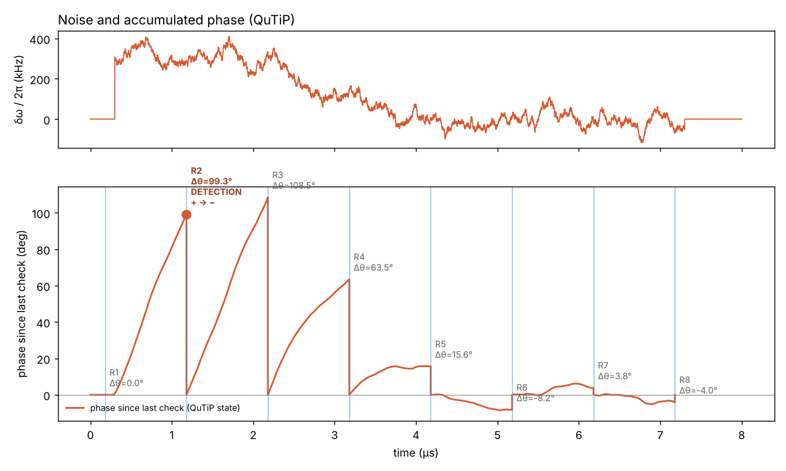

Purpose
A decoder never sees the noise. It only sees syndromes. This page tests how much information about the noise the syndromes contain. The approach has two stages:
- Forward (noise known): write the noise as a phase angle for every round, simulate the stabilizer checks, and record which rounds produce detection events.
- Reverse (noise unknown): start from the syndromes of many shots only, estimate the angle in each round, and compare the estimate with the true angle from stage 1.
If the reverse stage recovers the angles, the same procedure can be applied to hardware, where the noise is not known.
Writing the noise as angles
The noise is a frequency shift δω(t). In the rotating frame it enters the two-level Hamiltonian
This Hamiltonian contains only σz, so its exact solution is a rotation about the Z axis by the accumulated phase. Between two checks (round r):
Example: a steady shift of 100 kHz is 2π × 0.1 = 0.63 rad/µs, so a 1 µs round accumulates 0.63 rad ≈ 36°. For fluctuating noise the integral is evaluated in 1 ns steps.
Here QuTiP solves H(t) numerically instead of using this formula. The two agree to within 0.01° in every round (table below), which confirms the formula for pure dephasing. Gates, T₁ or leakage would require the numerical solution.
Each angle sets the probability that the check reports a change: P(flip) = sin²(Δθr/2).
How the recovered information is used
- Decoder weights. The recovered angle size and noise memory give the probability of each error and how errors cluster in time. These set the edge weights of a noise-aware decoder, which then expects further errors near a recent detection.
- Hardware diagnosis. Per-round angles show which qubit is noisy, when a burst (e.g. a TLS event) started, and whether it spread, using syndromes that are already collected during error correction.
- Cycle-time choice. Comparing τc with the cycle time T shows whether checking more often reduces or increases errors and detection latency.
Model
| Parameter | Value |
|---|---|
| Noise | OU, variance-normalized; scale 140 kHz (RMS for OU); τc = 2.0 µs; seed 3 |
| Onset, duration, decay | 0.3 µs, 7.0 µs, none |
| Cycle time, CNOT sample, result | 1000 ns, 180 ns, 780 ns into each cycle |
| T₁, extra Tφ | off, off |
| Time step | 1.0 ns |
The noise scale is above the typical 5–140 kHz range for OU fluctuations (2σ excursions reach ≈ 280 kHz) so that the motion is visible. Change it with --f-khz.
Animation
The orange arrow is the Bloch vector of the data qubit (rotating frame) and the dots trace its path since the last check. At each check the vector is projected onto |+⟩ or |−⟩. The panel lists, per round, the accumulated phase Δθ, the resulting flip probability sin²(Δθ/2), the syndrome and any detection event.
Forward stage: angle change per round

| Round | Sample time (ns) | Δθ from ∫δω dt | Δθ from QuTiP state | P(flip) | Syndrome | Event |
|---|---|---|---|---|---|---|
| R1 | 180 | +0.00° | +0.00° | 0.0% | +1 | — |
| R2 | 1180 | +99.26° | +99.26° | 58.0% | -1 | detection, + → − |
| R3 | 2180 | +108.50° | +108.50° | 65.9% | -1 | — |
| R4 | 3180 | +63.49° | +63.49° | 27.7% | -1 | — |
| R5 | 4180 | +15.62° | +15.62° | 1.8% | -1 | — |
| R6 | 5180 | -8.25° | -8.25° | 0.5% | -1 | — |
| R7 | 6180 | +3.83° | +3.83° | 0.1% | -1 | — |
| R8 | 7180 | -4.03° | -4.03° | 0.1% | -1 | — |
The two Δθ columns agree to within 0.01°, which validates the numerical H(t) evolution against the analytic result for pure dephasing. A large Δθ does not guarantee a detection: in round 3 the flip probability was 66% but the outcome was no change.
Run it yourself
pip install -r qutip_sim/requirements.txt python qutip_sim/bloch_stabilizer.py --f-khz 140 --noise ou --tau-c-us 2 --rounds 8 --seed 3 # options: --onset-us --duration-us --decay-us --cycle-us --sample-us --result-us # --t1-us --tphi-us (T1 / extra dephasing via mesolve) --no-video
Outputs in qutip_sim/output/: bloch_animation.mp4, angle_changes.png, rounds.csv, summary.json. With --t1-us the Bloch vector shortens and moves toward |0⟩, i.e. inside the sphere, as the state becomes mixed.
Scope: one data qubit with an ideal, instantaneous projective check at the CNOT sample time. The multilevel transmon, gate pulses, the entangled four-qubit stabilizer and measurement errors are not yet included.